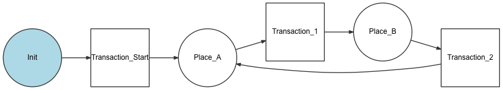

The Workflow Component¶
The Workflow component provides tools for managing a workflow or finite state machine.
Installation¶
1 | $ composer require symfony/workflow
|
注釈
If you install this component outside of a Symfony application, you must
require the vendor/autoload.php file in your code to enable the class
autoloading mechanism provided by Composer. Read
this article for more details.
Creating a Workflow¶
The workflow component gives you an object oriented way to define a process or a life cycle that your object goes through. Each step or stage in the process is called a place. You do also define transitions that describe the action to get from one place to another.
A set of places and transitions creates a definition. A workflow needs
a Definition and a way to write the states to the objects (i.e. an
instance of a MarkingStoreInterface).
Consider the following example for a blog post. A post can have one of a number of predefined statuses (draft, reviewed, rejected, published). In a workflow, these statuses are called places. You can define the workflow like this:
use Symfony\Component\Workflow\DefinitionBuilder;
use Symfony\Component\Workflow\MarkingStore\MethodMarkingStore;
use Symfony\Component\Workflow\Transition;
use Symfony\Component\Workflow\Workflow;
$definitionBuilder = new DefinitionBuilder();
$definition = $definitionBuilder->addPlaces(['draft', 'reviewed', 'rejected', 'published'])
// Transitions are defined with a unique name, an origin place and a destination place
->addTransition(new Transition('to_review', 'draft', 'reviewed'))
->addTransition(new Transition('publish', 'reviewed', 'published'))
->addTransition(new Transition('reject', 'reviewed', 'rejected'))
->build()
;
$singleState = true; // true if the subject can be in only one state at a given time
$property = 'currentState'; // subject property name where the state is stored
$marking = new MethodMarkingStore($singleState, $property);
$workflow = new Workflow($definition, $marking);
The Workflow can now help you to decide what transitions (actions) are allowed
on a blog post depending on what place (state) it is in. This will keep your domain
logic in one place and not spread all over your application.
When you define multiple workflows you should consider using a Registry,
which is an object that stores and provides access to different workflows.
A registry will also help you to decide if a workflow supports the object you
are trying to use it with:
use Acme\Entity\BlogPost;
use Acme\Entity\Newsletter;
use Symfony\Component\Workflow\Registry;
use Symfony\Component\Workflow\SupportStrategy\InstanceOfSupportStrategy;
$blogPostWorkflow = ...
$newsletterWorkflow = ...
$registry = new Registry();
$registry->addWorkflow($blogPostWorkflow, new InstanceOfSupportStrategy(BlogPost::class));
$registry->addWorkflow($newsletterWorkflow, new InstanceOfSupportStrategy(Newsletter::class));
Usage¶
When you have configured a Registry with your workflows,
you can retrieve a workflow from it and use it as follows:
// ...
// Consider that $blogPost is in place "draft" by default
$blogPost = new BlogPost();
$workflow = $registry->get($blogPost);
$workflow->can($blogPost, 'publish'); // False
$workflow->can($blogPost, 'to_review'); // True
$workflow->apply($blogPost, 'to_review'); // $blogPost is now in place "reviewed"
$workflow->can($blogPost, 'publish'); // True
$workflow->getEnabledTransitions($blogPost); // $blogPost can perform transition "publish" or "reject"
Learn more¶
Read more about the usage of the Workflow component inside a Symfony application.